6 A ordem e a função das palavras em uma sentença
Sintaxe
6.1 Introdução
Nos capítulos anteriores, vimos algumas das unidades de análise que são examinadas nas distintas subáreas dos estudos linguísticos, cada uma das quais com desafios específicos para o PLN. Neste capítulo, nosso foco será uma subárea em particular – a sintaxe –, que estuda como as palavras se organizam nas estruturas que constroem as distintas funções gramaticais no escopo da frase ou sentença.
Retomando nossa representação do estudo da linguagem (Figura 1.2 do Capítulo O que é PLN?), podemos dizer que a sintaxe é um estrato/camada central do sistema linguístico (Figura 6.1), pois organiza funções no estrato imediatamente inferior – a morfologia – e fornece estruturas de funções que serão importantes nos estratos superiores – semântica e pragmática – para, por exemplo, identificar papéis temáticos cruciais na tarefa de extração de informação, os quais respondem as perguntas “quem?” faz “o quê?”, “para quem?”, “como?”, “quando?”, “onde?” etc.
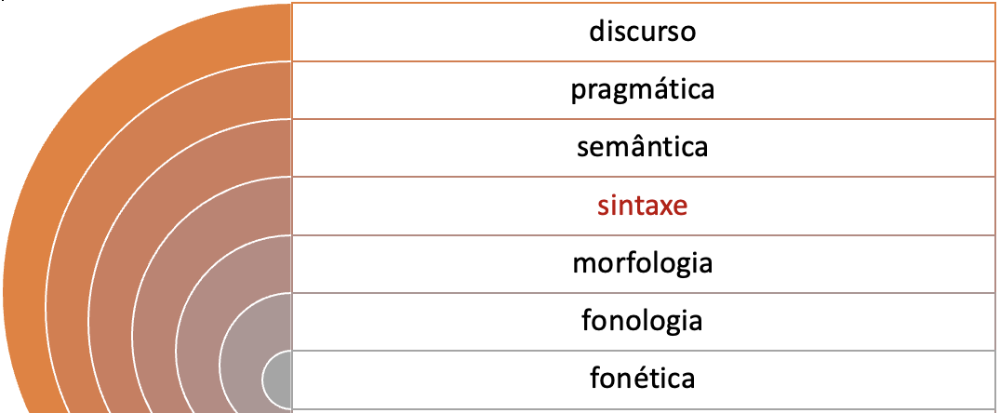
Ainda em relação ao sistema linguístico, além de sua organização em estratos, temos uma segunda forma de organização: a escala de ordens (em inglês, rank scale), que organiza diferentes unidades de análise em níveis hierárquicos. A escala de ordens1 está representada na Figura 6.2. Os morfemas são as menores unidades constitutivas das palavras, as quais, por sua vez, se organizam em estruturas, chamadas sintagmas, que nos permitem construir funções na oração, tais como sujeito, objetos, adjuntos e complementos.
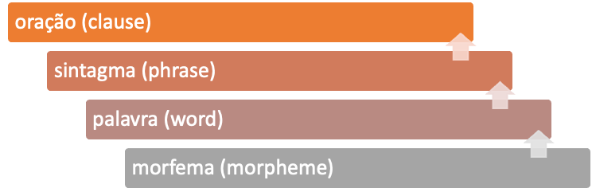
A escala de ordens abrange as unidades utilizadas para a descrição da língua, seja esta língua falada ou escrita. A unidade superior de análise – a oração – consiste em um conjunto organizado de palavras que constroem significados sobre algum evento no mundo, que, como dissemos, podemos indagar perguntando “quem?” faz “o quê?”, “para quem?”, “como?”, “quando?”, “onde?” etc.
Na língua escrita, há uma unidade grafológica, geralmente denominada, em português, “sentença”, também conhecida como “frase” ou “período”2. A “sentença” segue as convenções prototípicas da língua escrita, isto é, letra maiúscula inicial e sinal de pontuação que indica finalização, podendo ser este um ponto final, um sinal de interrogação ou de exclamação. A distinção entre “sentença” (em inglês, sentence) e “oração” (em inglês, clause) é muito importante em PLN, uma vez que em uma sentença (aquela que inicia com letra maiúscula e conclui com sinal de pontuação) pode haver mais de uma oração e, portanto, mais de um evento.
Neste capítulo, vamos abordar os níveis da escala de ordens e sua relevância para a análise sintática. Para compreendermos melhor como as palavras funcionam nos distintos tipos de sintagma e os sintagmas na oração, apresentaremos exemplos que esperamos que sejam esclarecedores. Após uma seção de reflexões iniciais, revisaremos conceitos básicos sobre análise sintática, passando por tipos de representação, até chegarmos nos dois tipos de análise sintática mais utilizados em PLN: a sintaxe de constituência e a sintaxe de dependência. Por último, abordaremos as intersecções entre a sintaxe e os demais estratos do sistema linguístico ao final deste capítulo, na Seção Fronteiras da sintaxe.
Antes de passarmos para nossas reflexões iniciais sobre sintaxe, cabe mencionar que o processo de analisar a estrutura de orações em PLN é denominado “parsing”, termo tomado por empréstimo do inglês. O parsing sintático toma como base a classe de palavra (em inglês, part-of-speech) das distintas palavras que compõem os sintagmas. Como veremos no Capítulo Ferramentas e recursos para o processamento sintático, em PLN a análise sintática automática é realizada por meio de softwares denominados parsers. Também veremos alguns desafios que a análise em constituintes sintáticos traz para os parsers já existentes, sobretudo em casos nos quais a delimitação de unidades e suas relações entre si na hierarquia da oração admitem mais de uma interpretação possível.
Um outro termo que é importante introduzir neste momento é o conceito de treebank, que é utilizado para se nomear um conjunto de sentenças com anotação morfossintática e com representação em diagramas de árvore. Nas seções seguintes, veremos alguns exemplos de diagramas de árvore juntamente com outras formas de representação. No Capítulo Ferramentas e recursos para o processamento sintático, veremos alguns dos treebanks disponíveis atualmente para PLN em português.
6.2 Reflexões Iniciais
Vamos começar examinando um texto, no Exemplo 6.1. Trata-se de um texto pequeno e simples, reproduzido aqui sem qualquer letra maiúscula e sem pontuação. Até o espaçamento entre palavras foi removido. À medida que for lendo, tente identificar sentido nele:
Exemplo 6.1
ameninapostouumafoto
Embora a forma como o texto é apresentado acima não seja a mais esperada por nós num texto hoje em dia, ao menos nas línguas de origem europeia contemporâneas, essa forma já foi utilizada na antiguidade, no latim clássico, e é conhecida como scriptio continua. De fato, a separação visual entre palavras e sentenças, tal como escrevemos hoje, foi um desenvolvimento histórico que levou à forma como representamos hoje a língua na sua forma escrita. Contudo, apesar do estranhamento que possa causar o texto no Exemplo 6.1, muito provavelmente você não teve muita dificuldade em reinserir o espaçamento entre palavras, chegando a uma versão como a que segue no Exemplo 6.2:
Exemplo 6.2
a menina postou uma foto
Pensando, ainda, numa versão impressa deste texto, a letra maiúscula inicial e a pontuação final certamente não geram grandes dificuldades e você deve ter chegado à versão no Exemplo 6.3:
Exemplo 6.3
A menina postou uma foto.
O reconhecimento de cada uma das palavras, separadamente, e da sentença toda como uma unidade, todavia, não é suficiente para podermos explicar por que ou como o texto faz sentido para nós. Entre as palavras individuais e a sentença como um todo, há agrupamentos que funcionam como unidades intermediárias e nos quais a ordem das palavras é condicionada pela estrutura da língua. Assim, na sentença acima, identificamos palavras que agrupamos como pequenos blocos de informação, pois constroem significados e contribuem com o significado do texto como um todo. Esses agrupamentos são, por exemplo, “a menina” e “uma foto”.
Em cada um desses agrupamentos de palavras que naturalmente reconhecemos, há uma ordem em que as palavras se sucedem umas às outras. Assim, uma palavra como “a” (artigo) ocorre antes de “menina” (substantivo), nunca depois. Quando a ordem das palavras dentro desses agrupamentos é trocada, temos uma forma que consideramos com problemas na sua formulação e que nos causa estranhamento. Por exemplo: “menina a” ou “foto uma”.
Com estas reflexões iniciais, passamos agora a revisar alguns conceitos básicos de sintaxe.
6.3 Noções Básicas de Sintaxe
O estudo de como as palavras se agrupam e se organizam em uma ordem determinada é o objeto do campo de estudos da sintaxe. É através da sintaxe que reconhecemos as regras que ditam quais agrupamentos de palavras serão aceitos por nós e quais serão considerados problemáticos.
Os agrupamentos operam como pequenos “tijolos” que vão construindo significados, ao serem agrupados em uma unidade maior até construir um significado que é relevante para a oração. Nessa analogia com tijolos que são agrupados, o Exemplo 6.3 pode ser representado como disposto na Figura 6.3:
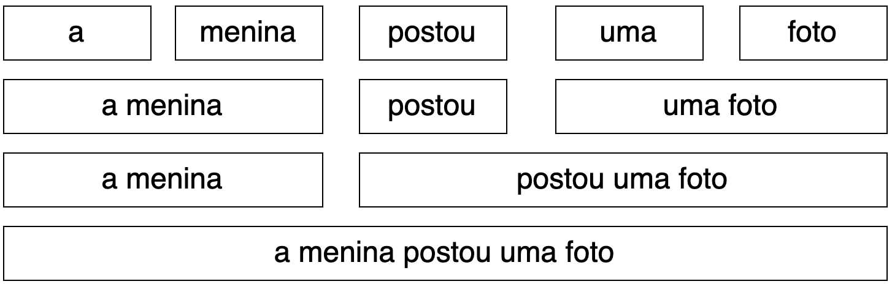
Olhando para a Figura 6.3, temos, no topo, cada uma das palavras do nosso exemplo. À medida que vamos descendo na Figura 6.3, vemos agrupamentos entre as palavras, os quais, progressivamente, culminam na oração. Os agrupamentos mais próximos da oração são aqueles que constroem os significados mais relevantes para a compreensão de informações, como as que respondem às perguntas elencadas no Quadro 6.1:
Quadro 6.1 Perguntas utilizadas para elucidar informações sobre eventos
Em cada um dos agrupamentos de palavras que vamos progressivamente formando até chegar ao agrupamento maior, a oração, as palavras trabalham para realizar uma função em comum; elas são uma única unidade funcionando dentro da oração. Dito de outra forma, cada um desses agrupamentos existe pois exerce uma função dentro da oração. Por exemplo, “a menina” é uma unidade constituída por um artigo, também chamado determinante (“a”), e um substantivo (“menina”). Esses dois elementos operam conjuntamente para constituir uma função e realizar um significado. Os agrupamentos acima do nível da palavra, como vimos na escala de ordens na Figura 6.2, recebem a denominação sintagma (em inglês, phrase). Cada um dos sintagmas é uma estrutura que é parte de uma unidade maior e que exerce uma função nela, sendo que esta outra estrutura pode ser um outro sintagma ou a oração.
Existem vários tipos de sintagma: sintagmas nominais, verbais, adverbiais, adjetivais e preposicionais, e cada um possui as suas próprias regras para a organização das palavras que o compõem, de acordo com a função que as palavras exercem dentro do próprio sintagma.
A cada uma das unidades que funciona dentro de um sintagma damos o nome de constituinte (em inglês, constituent). São constituintes as palavras individuais bem como seus agrupamentos progressivos em unidades maiores. Nossa sentença “A menina postou uma foto” está constituída por cinco palavras, as quais podem ser agrupadas em constituintes intermediários até dois grandes constituintes: [a menina] e [postou uma foto].
Alguns exemplos de constituintes no nível da palavra são: substantivos, verbos, adjetivos etc.
Retomando o Exemplo 6.3 temos, então, os seguintes sintagmas: “a menina”, que é um sintagma nominal, pois o seu constituinte principal é o substantivo “menina”; e “postou uma foto”, que é um sintagma verbal, pois seu constituinte principal é o verbo “postou”; dentro do sintagma verbal temos ainda um outro sintagma, “uma foto”, que é considerado um sintagma nominal, pois seu constituinte principal é o substantivo “foto”. É importante notar, portanto, que pode haver um ou mais sintagmas dentro de um outro sintagma. Esse constituinte principal que dita qual é o tipo de sintagma é chamado de núcleo, pois ele é o núcleo da estrutura gramatical, ou seja, do sintagma.
Para saber com que tipo de sintagma estamos lidando, precisamos, então, saber que fatores ditam qual é o núcleo desse sintagma. Isso irá depender da função que o sintagma exerce na oração. Pensemos no exemplo: o sintagma nominal “uma foto” exerce a função de objeto dentro do sintagma “postou uma foto”. Objetos são realizados por sintagmas nominais; assim, o seu núcleo é um substantivo.
É importante ressaltar, também, que esses constituintes não se restringem ao nível imediatamente inferior na oração, nem a nenhum outro nível: constituintes são os componentes que integram todas as estruturas da sentença, ou seja, todos os sintagmas, e podem ser compostos por outros constituintes. Daí a relevância da escala de ordens apresentada na Figura 6.2.
No Exemplo 6.3, os sintagmas “a menina”, “postou uma foto” e “uma foto” têm uma função no nível superior da escala de ordens, isto é, na oração. Na oração, essas funções podem ser associadas ao que chamamos, na Semântica, de papéis temáticos.
Papel temático é um conceito utilizado para nomear o tipo de relação que um verbo estabelece com seu sujeito e seus complementos, relação pela qual o verbo lhes atribui uma função semântica, como, por exemplo, Agente, Paciente ou Objeto de uma ação. Os papéis temáticos podem ser mapeados com as funções sintáticas na oração e podem ser indagados por meio de perguntas do tipo “quem?” faz “o quê?”, “para quem?”, “como?”, “quando?”, “onde?” etc., como as exemplificadas no Quadro 6.2. As respostas a cada pergunta nos ajudam a identificar um constituinte com uma função sintática específica na oração e um papel temático. No Exemplo 6.3, a parte da oração que responde a pergunta “quem?” correspondente ao sujeito da oração, que, neste caso, é identificado com o papel temático de Agente da ação realizada. Já a parte que responde a “o quê?” corresponde ao objeto do verbo e ao papel temático Objeto Estativo.
Quadro 6.2 Exemplo de funções sintáticas e papéis temáticos
Como vimos, então, um sintagma pode ser construído por uma ou mais palavras, sendo uma delas a principal, o núcleo. A estrutura dos constituintes é o que conhecemos como sintagma e o tipo de sintagma é definido pela classe de palavra do seu núcleo ou componente principal. No Quadro 6.3, temos os três constituintes da oração no Exemplo 6.3 e o tipo de sintagma de cada um deles.
Quadro 6.3 Exemplo de tipos de sintagma
Palavras e sintagmas podem, assim, ser constituintes, sempre funcionando numa estrutura maior, na escala de ordens, tendo como unidade maior a oração. A análise da estrutura das orações de acordo com seus constituintes e a hierarquia estabelecida entre eles é conhecida como sintaxe de constituência. A análise sintática de constituência é um dos dois tipos de análise sintática mais utilizados em PLN, sendo o outro tipo a denominada sintaxe de dependência. Neste capítulo, vamos apresentar os dois tipos de análise e discorrer brevemente sobre suas diferenças. Mas, antes, vamos examinar os principais tipos de representação em sintaxe.
6.4 Tipos de representação
Há algumas formas convencionais de se representar as estruturas sintáticas que podem ser utilizadas de acordo com o tipo de análise sintática. Dentre elas, destacamos as seguintes: colchetes, árvores, setas, parênteses e indentação.
6.4.1 Colchetes
Colchetes (em inglês, brackets) são uma forma de representação hierárquica por meio da qual indicamos quais palavras estão agrupadas dentro de uma mesma unidade e quais unidades são parte de unidades maiores. Por exemplo, a sentença “A menina postou uma foto.” pode ser representada, de forma progressiva, dos constituintes maiores aos menores, como ilustrado na Figura 6.4.
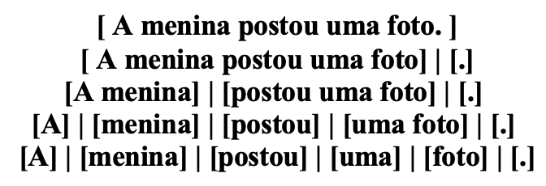
No topo, temos um único par de colchetes que abrange a sentença toda. Em seguida, separamos, entre colchetes, a oração e seu ponto final. Em seguida, separamos, entre colchetes, os constituintes maiores e, progressivamente, vamos separando, entre colchetes, constituintes dentro de constituintes, até chegarmos às palavras individuais, que são nossos constituintes mínimos. Barras verticais auxiliam a visualização na Figura 6.4.
Na representação por meio de colchetes, cada par de colchetes indica um nível de continência. O par de colchetes mais externo contém a sentença como um todo. Já o par de colchetes mais interno de todos contém as palavras. As unidades menores encontram-se contidas nas maiores, sendo as unidades mínimas cada uma das palavras individualmente. A representação completa pode ser feita numa única linha:
[[[[[A][menina]][[postou][[uma][foto]]]][.]]]
Este tipo de representação, como veremos neste capítulo, pode ser feito tanto para sintaxe de constituência como para sintaxe de dependência.
6.4.2 Árvores
Árvores (em inglês, trees) são uma forma de representação que fornece uma visualização mais clara da hierarquia dos constituintes. Assim, nosso exemplo anterior tem a seguinte representação arbórea na Figura 6.5:
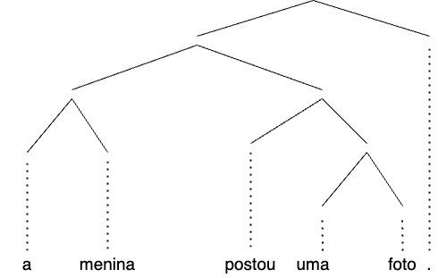
Na notação com estruturas arbóreas, um diagrama chamado de árvore representa graficamente a estrutura de uma sentença como uma hierarquia, sendo os nós (em inglês, nodes), elementos discretos (ou elementos finais) em um grafo (ou representação simbólica) e as arestas (em inglês, edges) linhas que conectam dois nós e indicam uma relação entre eles.
Este tipo de representação, como veremos neste capítulo, pode ser feito tanto para sintaxe de constituência como para sintaxe de dependência.
6.4.3 Setas
Setas (em inglês, arced arrows) são uma representação na qual setas unidirecionais são desenhadas de um nó pai (em inglês, parent) para um nó filho (em inglês, child), como pode ser visto na Figura 6.6. Nela, temos uma representação de relações de dependência entre nós pais e filhos. A seta parte da palavra que governa a relação e chega na palavra dependente. Essa relação será melhor explicada na Seção Sintaxe de dependência.
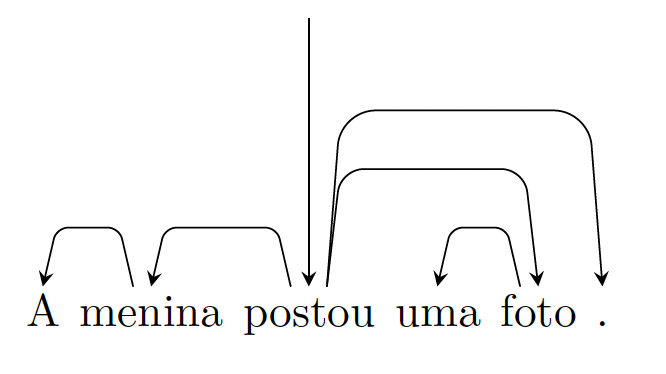
A seta central, que chega no verbo “postou” é apenas uma representação conceitual de que esse é o elemento central da sentença. As setas que saem de “postou” e chegam em “menina”, “foto” e “.” indicam que, nessas relações, “postou” é o pai e “menina”, “foto” e “.” são filhos de “postou”. A seta que sai de “menina” e chega em “a” indica que “a” é filho de “menina”, assim como a seta de “foto” para “uma” indica que “foto” é pai de “uma”.
Este tipo de representação, como veremos mais adiante neste capítulo, é prototípico da análise sintática de dependência.
6.4.4 Parênteses
Parênteses (em inglês, parentheses) são usados para estabelecer a relação entre pares de palavras. Nesta representação, cada um dos pares de palavras entre as quais se estabelece uma relação unidirecional de dependência é apresentado entre parênteses, sendo a primeira posição a da palavra que governa a relação e a segunda a da palavra dependente.
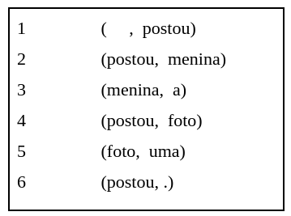
Na linha 1, temos a relação conceitual de root, que é representada pelo elemento vazio, o qual governa o verbo “postou”, considerado o elemento central na sentença. Assim como na representação por setas, temos nas linhas 2, 4 e 6, as relações de dependência em que o verbo “postou” governa seus dependentes “menina”, “foto” e “.”, respectivamente. Na linha 3, vemos a dependência de “a” (dependente) em relação a “menina” (governante), assim como na linha 5, em que “uma” é dependente de “foto”.
Este tipo de representação é utilizado pela análise sintática de dependência.
6.4.5 Indentação
Indentação (em inglês, indentation) também é usada para explicitar a hierarquia entre as palavras. Este tipo de representação nos permite visualizar a hierarquia nas relações de dependência.
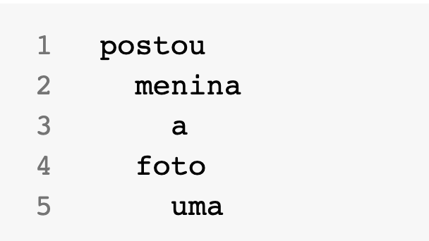
Na Figura 6.8, os dependentes ou nós filhos, por exemplo “menina” e “foto”, são indentados em relação ao nó pai “postou”. Os nós “a” e “uma” são indentados em relação aos nós “menina” e “foto”, respectivamente.
Este tipo de representação é utilizado pela análise sintática de dependência.
Como veremos nas seções seguintes, cada formato de representação pode ser mais ou menos adequado para cada tipo de análise sintática. Neste capítulo, vamos explicar as duas abordagens mais comuns de análise sintática que fundamentam os dois tipos de parsing mais utilizados em PLN: o parsing de constituência e o parsing de dependência.
6.5 Sintaxe de constituência
Na sintaxe de constituência, também chamada de sintaxe de constituintes, unidades chamadas constituintes são agrupadas em unidades maiores. Os constituintes podem ser palavras ou distintos tipos de sintagmas, podendo haver sintagmas contidos dentro de sintagmas maiores. Esse fenômeno implica uma hierarquia de unidades, que é capturada e visualizada por meio de representações como as que vimos na seção anterior.
Na sintaxe de constituência, a estrutura hierárquica pode ser representada com o uso de colchetes, que, como vimos anteriormente, indicam quais constituintes inferiores estão contidos nos constituintes hierarquicamente superiores; ou com estruturas arbóreas, nas quais no topo da árvore encontra-se a sentença completa e, nos níveis inferiores, os constituintes menores. Em ambos os casos, cada constituinte está acompanhado de sua respectiva notação, de acordo com um conjunto específico de etiquetas morfossintáticas (em inglês, tagset).
A análise sintática tem como ponto de partida a unidade maior – a sentença – representada, prototipicamente, pela notação S (do inglês, sentence). Se uma sentença tem pontuação final, o sinal de pontuação recebe a notação PNT (do inglês, punctuation) e é anotado no mesmo nível hierárquico de S. De S, derivam constituintes cujas estruturas realizam tipicamente as funções sintáticas no nível da oração: sujeito, geralmente realizada por um constituinte com estrutura de sintagma nominal, que recebe a notação NP (do inglês, noun phrase); e predicado, geralmente realizada por um constituinte com estrutura de sintagma verbal, com a notação VP (do inglês, verb phrase), podendo ter objetos com estrutura prototípica de sintagma nominal (NP). Há também frases preposicionais, anotadas como PP (do inglês, prepositional phrase). Nos níveis seguintes, cada constituinte é subdividido em subconstituintes até chegarmos às palavras individuais, as quais recebem a notação de sua classe: V para verbo, N para substantivo, DET para determinantes como artigos e pronomes demonstrativos, ADJ para adjetivo, ADV para advérbio, e P para preposição.
Vejamos a representação com colchetes e notação para a sentença: “A menina postou uma foto.”.
[ROOT [S [S [NP [DET A] [N menina]] [VP [V postou] [NP [DET uma] [N foto]]]] [PNT .]]]
Como pode ser observado, a cada palavra é atribuída uma classe de palavra de acordo com um conjunto de etiquetas definido. Nesta representação, o par de colchetes mais externos contém a sentença como um todo, incluindo a pontuação, e recebe a etiqueta ROOT (em português, raiz) que indica o ponto inicial da análise. Já os pares de colchetes mais internos de todos contêm as palavras individuais com sua respectiva notação para classe de palavra.
Na notação com estruturas arbóreas, a sentença: “A menina postou uma foto.” é representada na forma de árvore3 na Figura 6.9.
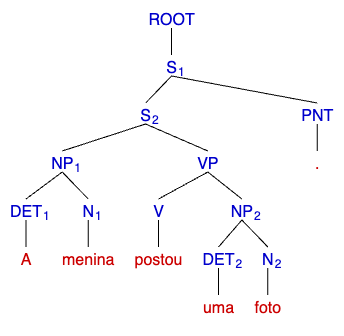
A árvore pode ser lida, de cima para baixo, da seguinte forma: O nó denominado ROOT indica a raiz da árvore. O nó S1 representa a sentença toda como um único constituinte; é o nó que domina todos os outros nós da árvore. No caso de uma sentença grafológica (unidade delimitada por um sinal de pontuação), como é o caso na Figura 6.9, temos uma representação da sentença como um todo (S1), abrangendo a sentença (S2) e o seu sinal de pontuação (PNT). De S2 derivam constituintes cujas estruturas realizam tipicamente as funções sintáticas no nível da oração: sujeito realizado por um constituinte com estrutura de sintagma nominal (NP) e predicado, por um constituinte com estrutura de sintagma verbal (VP). Nos níveis seguintes, cada constituinte é subdividido em subconstituintes até chegarmos às palavras individuais.
Na árvore de constituência, as arestas representam segmentos que conectam os nós filhos a um nó pai. Assim, o nó NP (“a menina”) possui uma aresta que conecta DET (“a”) e N (“menina”). As palavras individuais são as folhas da árvore (em inglês, leaves) e são o nível inferior na hierarquia da árvore.
Identificar os constituintes e seu lugar na hierarquia da oração é uma operação fundamental para a compreensão das funções sintáticas, que, como vimos, são a base para as funções semânticas da oração. Uma vantagem da notação com estrutura arbórea é a maior facilidade com a qual podemos visualizar as relações hierárquicas dos constituintes. Contudo, a notação com colchetes é computacionalmente mais fácil de ser processada.
6.5.1 Possibilidades de interpretação e ambiguidades sintáticas
Vejamos agora um exemplo de como a análise de constituintes requer uma análise dos papéis temáticos.
Exemplo 6.4
A menina postou uma foto com o celular.
No Exemplo 6.4, “com o celular” é um sintagma preposicional (PP), formado pela preposição “com” e o sintagma nominal “o celular”. Uma característica dos sintagmas preposicionais é que eles podem estar contidos num sintagma nominal ou num sintagma verbal. No Exemplo 6.4, “com o celular” pode estar contido no sintagma nominal “uma foto” ou no sintagma verbal “postou uma foto”. A decisão por considerar uma ou outra análise depende da interpretação do analista, tendo como apoio informações do contexto, ou seja, as informações que podemos depreender de outras partes do texto ou ao ter acesso a imagens, como, por exemplo, na Figura 6.104.
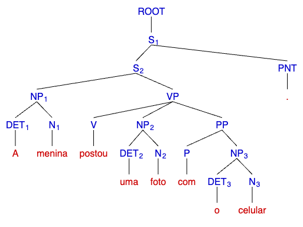
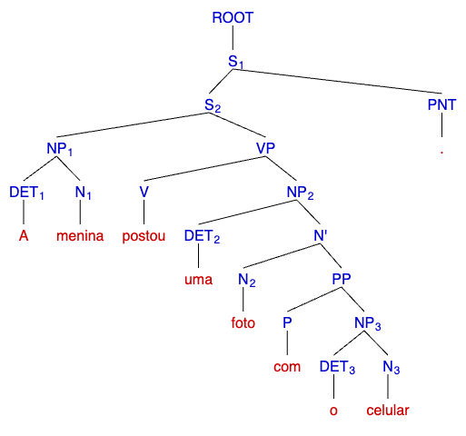
Na Figura 6.10, a imagem de cima pode ser interpretada como uma foto que foi postada com o celular, sendo o celular o instrumento utilizado para a postagem. Nesse caso, o sintagma preposicional “com o celular” estará ligado ao sintagma verbal “postou”, como mostrado na representação da árvore.
Já a imagem de baixo, na Figura 6.10, pode ser interpretada como a menina tendo postado uma foto, na qual ela está segurando o celular. Nesse caso, o sintagma preposicional “com o celular” estará contido no sintagma nominal “uma foto com o celular”, como mostrado na representação da árvore.
Há alguns testes que podem ser realizados para observar se um constituinte, por exemplo, um sintagma preposicional, deve ser interpretado como vinculado a um sintagma verbal ou contido em um sintagma nominal. Se o sintagma preposicional pode ser deslocado de posição numa oração e esse deslocamento é condizente com o significado que interpretamos pelas dicas do contexto, ele estará conectado ao sintagma verbal. Assim, em “A menina postou uma foto com o celular”, podemos mudar a posição do sintagma preposicional “com o celular” e obtermos duas sentenças nas quais “com o celular” se conecta ao sintagma verbal “postou”:
Exemplo 6.5
Com o celular, a menina postou uma foto.
Uma outra possibilidade é fazer uma paráfrase da oração, como no Exemplo 6.6. Por outro lado, se o sintagma preposicional “com o celular” for interpretado como sendo contido no sintagma nominal “uma foto com o celular”, a paráfrase poderia ser a apresentada no Exemplo 6.7.
Exemplo 6.6
A menina postou uma foto por meio do celular.
Exemplo 6.7
A menina postou uma foto na qual ela está segurando o celular.
Se considerarmos as duas interpretações do Exemplo 6.4 sob a perspectiva dos papéis temáticos, podemos afirmar que o sintagma preposicional “com o celular” terá o papel temático de Instrumento quando estiver vinculado ao sintagma verbal “postou”. Se o sintagma preposicional estiver contido dentro do sintagma nominal “uma foto com o celular”, o sintagma como um todo terá o papel temático de Objeto Estativo.
A decisão sobre como segmentar a oração em constituintes exige do analista humano a interpretação de significados que são construídos pelas distintas funções sintáticas, associadas aos papéis temáticos e tendo como apoio o contexto, isto é, informações situacionais (por exemplo, imagens que acompanham a linguagem verbal) ou de sentenças anteriores ou posteriores no próprio texto do qual uma sentença faz parte.
Esta situação é um exemplo representativo de um dos motivos pelos quais o conhecimento linguístico e de uso da língua ainda não têm sido completamente representado/capturado por nenhum dos métodos atuais. A interpretação de significados linguísticos que dependem de informações contextuais é um dos maiores desafios para o PLN atualmente.
Além da análise sintática de constituintes da oração, há uma segunda abordagem, conhecida como sintaxe de dependência. Ela será o objeto da seção seguinte.
6.6 Sintaxe de dependência
O segundo tipo de análise sintática é chamado de sintaxe de dependência e tem suas bases na gramática de dependência de Tesnière (1959).
Diferentemente da abordagem de constituência, explicada na seção anterior, em que a estrutura de uma sentença é definida por meio de sintagmas contidos em outros sintagmas, a análise de dependência descreve as relações de dependência entre palavras. Nessa abordagem, uma palavra é vista como subordinada a outra ou regida por ela, de acordo com relações sintáticas tais como sujeito-verbo; sujeito-objeto; verbo-objeto; coordenação; subordinação etc.
Na sintaxe de dependência, cada palavra é um nó de uma relação com uma outra palavra. Essas relações entre palavras são estabelecidas de forma unidirecional entre uma palavra regente (head), que é o nó de onde a relação parte, e uma palavra regida ou dependente, que é o nó ou palavra aonde a relação chega. Essa unidirecionalidade da relação é importante para se estabelecer a hierarquia entre as palavras, pois determina quem é o regente (de onde a relação parte) e quem é o regido (aonde a relação chega), o que será explicado na Subseção Núcleo e dependente. Por fim, é importante destacar que uma palavra pode reger várias outras, mas só pode ser regida por uma única.
Se quisermos conectar dois sintagmas, precisamos, diferentemente da análise de constituintes, conectar a palavra que representa o núcleo de um sintagma à palavra que representa o núcleo de outro sintagma. Além disso, também é necessário estabelecer as microrrelações dentro de um mesmo sintagma.
Na sintaxe de dependência, há basicamente dois tipos de relações:
(i) macrorrelações
(ii) microrrelações.
Como o próprio nome sugere, as macrorrelações estabelecem relações entre os núcleos de diferentes sintagmas e geralmente conectam palavras de classe aberta. Por exemplo, a relação que liga um verbo (núcleo do sintagma verbal) ao seu sujeito (núcleo do sintagma nominal) é chamada de macrorrelação. Já as microrrelações conectam elementos mais próximos, podendo ser adjacentes ou estar em uma vizinhança próxima. As microrrelações de dependência geralmente conectam uma palavra de classe aberta a uma palavra de classe fechada, como é o caso de um substantivo (palavra de classe aberta) e seu artigo (palavra de classe fechada).
6.6.1 Núcleo e dependente
Para estabelecer a relação de hierarquia entre duas palavras na sintaxe de Dependência, os termos mais usados em inglês são head e dependent. Em português, convencionou-se traduzir dependent por “dependente”, mas, com relação a “head”, os trabalhos de PLN usam nomenclaturas diferentes, tais como “cabeça”, “núcleo”, “dominante” ou o próprio termo em inglês head5. Também é comum em PLN chamar o núcleo de “pai” e o dependente de “filho”, já que essa nomenclatura permite extrapolar as relações de parentesco e chamar também os nós de “avô” (quando se refere ao núcleo do núcleo), “neto” (quando se refere ao dependente do dependente) e de “irmão” (quando os dependentes possuem o mesmo núcleo)6.
Em uma relação de dependência, o núcleo é o que rege, que comanda o seu dependente. Por exemplo, em um sintagma nominal como “a menina”, o substantivo é o núcleo enquanto o artigo é o dependente, pois é o substantivo que rege o artigo, impondo-lhe os traços morfológicos de gênero (neste caso, feminino) e de número (neste caso, singular).
Definir quem é o núcleo e quem é o dependente nem sempre é uma tarefa fácil. Apesar de existirem convenções de diferentes teorias que definem essa hierarquia, nem sempre essas convenções são consensuais e, às vezes, essas definições são estabelecidas de forma arbitrária ou ad hoc. Por exemplo, preposições são consideradas núcleo em algumas abordagens de dependências (Osborne; Gerdes, 2019) e dependentes em outras (Universal Dependencies).
Por fim, vale ressaltar que as palavras podem ser núcleos ou dependentes, a depender da relação que elas estabelecem umas com as outras. Na frase “A menina postou uma foto.”, por exemplo, o substantivo “menina”, será núcleo na relação com seu determinante “a”, mas ao mesmo tempo será dependente na relação com o verbo “postou”. Algumas palavras, principalmente as de classe fechada, são consideradas sempre como dependentes, enquanto outras podem ser ora núcleo, ora dependente, considerando-se a outra palavra com a qual se relacionam.
6.6.2 A representação da sintaxe de dependência
Assim como na sintaxe de constituência, as relações de dependência podem ser representadas de formas distintas, sendo que todas explicitam a hierarquia e a direcionalidade da relação entre duas palavras em uma sentença. Das representações vistas neste capítulo, as duas mais utilizadas são os diagramas com setas e com representação parentética.
Como já foi dito, na representação com seta, as palavras são ligadas umas às outras por setas unidirecionais, ou seja, em um único sentido. Cada seta tem um ponto de partida e um ponto de chegada, o que significa que as relações não são recíprocas e nem uma mera concatenação entre palavras; pelo contrário, essas setas explicitam a dependência de uma palavra em relação à outra. Vale esclarecer que a representação com setas, assim como a representação de dependência com diagrama arbóreo, são ambas chamadas de “árvore de dependência”. A Figura 6.11 mostra um exemplo de representação das relações de dependência com setas.
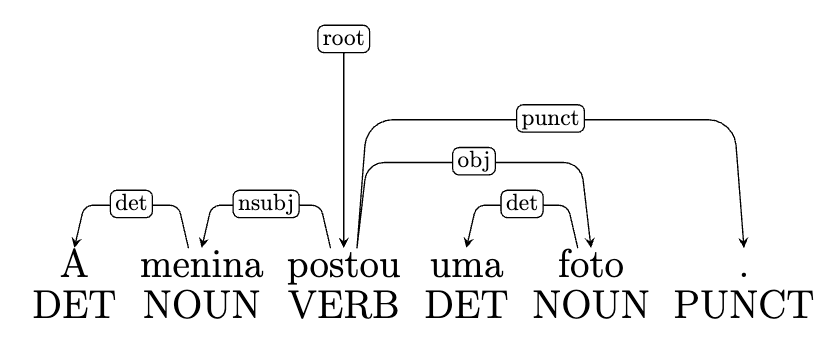
Como vemos na Figura 6.11, a cada palavra é atribuída uma etiqueta morfossintática, indicada em caixa alta na parte de baixo da Figura. A etiqueta que aparece acima dos arcos das setas representa o nome da relação que se estabelece entre a palavra núcleo e a palavra dependente. Essa etiqueta é escrita em letras minúsculas. As etiquetas são selecionadas dentro de um conjunto fechado que varia segundo o padrão de anotação. Na Figura 6.11, o conjunto de etiquetas é o proposto pelo projeto Universal Dependencies, sobre o qual falaremos na Subseção Projetos de anotação multilingue: Universal Dependencies.
Como vemos na Figura 6.11, toda sentença possui uma única raiz (ou root), que é a palavra que não depende de nenhuma outra. Em sentenças que possuem verbos, a raiz geralmente é o próprio verbo.
No exemplo da Figura 6.11, verificamos três macrorrelações entre: i) o verbo (“postou”) e o núcleo do sujeito (“menina”); ii) o verbo (“postou”) e o núcleo do objeto direto (“foto”); e iii) o verbo e o ponto final. Em todas elas, o verbo é o núcleo e as demais palavras são seus dependentes, conforme aponta a direção das setas.
Há também duas microrrelações entre: i) o substantivo (“menina”) e o artigo (“a”); e ii) o substantivo (“foto”) e o artigo (“uma”).
Em uma árvore de dependência, algumas classes de palavras podem ser núcleo; outras, não. Mas cada palavra é dependente de uma outra. Isso significa que, na representação por diagrama com setas, em toda palavra deve chegar alguma (e exclusivamente uma) seta. A única exceção é para a raiz, na qual também chega uma seta, mas é a seta da relação root, o que significa que esta é a única palavra que não tem núcleo/pai. Todas as demais palavras, além da raiz, possuem um núcleo, de onde a seta parte.
Conforme sinalizado na Subseção Núcleo e dependente, o ponto de partida da seta representa o núcleo, e o ponto de chegada representa o dependente. Algumas relações de dependência permitem qualquer direção de seta, ou seja, pode ir de uma palavra à esquerda para uma palavra à direita ou vice-versa (e.g. relações de nsubj, punct, obj etc.). Outras relações possuem direção obrigatória, como é o caso de det ou de case, que é sempre da direita para a esquerda em línguas românicas como o português, uma vez que artigos e preposições são antepostos aos substantivos.
Na Figura 6.12, temos a representação da sentença “A menina postou uma foto com o celular”, aqui anotada em sintaxe de dependência. Nela, “com o celular” é interpretado como Instrumento e como uma função dependente do verbo “postou”.
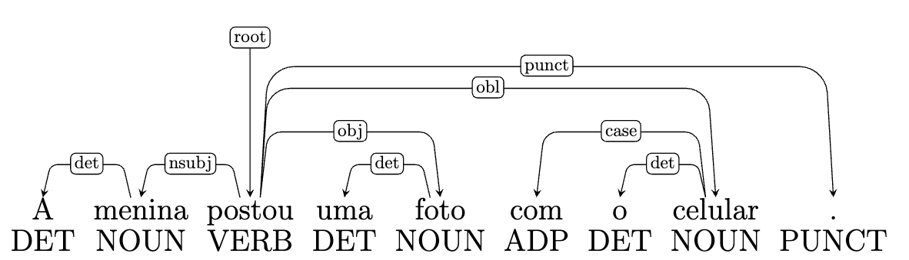
Já na Figura 6.13, “com o celular” é interpretado como contido no sintagma nominal e com uma função dependente do substantivo “foto”.
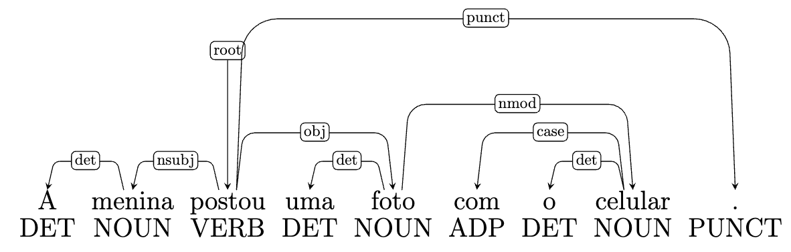
Na sintaxe de dependência, existe uma orientação geral para se evitar cruzamento dos arcos das setas. Na maior parte das vezes, isso é possível e recomendado. Porém, há casos pontuais em que o cruzamento de arcos é necessário para estabelecer a relação correta entre duas palavras, como ocorre no Exemplo 6.8 da Figura 6.14.
Exemplo 6.8
A menina postou uma foto no Instagram com filtro.
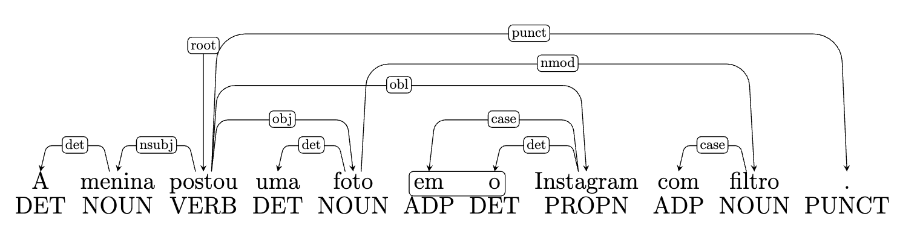
Neste exemplo, foi necessário cruzar os arcos de duas relações porque existe uma relação entre “postou no Instagram” e outra relação entre “foto com filtro”. Para não haver cruzamento de arcos, a sentença teria de ter a seguinte ordem: “A menina postou uma foto com filtro no Instagram.” ou ainda “A menina postou no Instagram uma foto com filtro.”
O segundo tipo de representação mais comum em sintaxe de dependência é aquela feita por meio de parênteses. Na representação parentética, coloca-se o nome da relação de dependência, seguida de parênteses; dentro dos parênteses, coloca-se o núcleo, seguido do dependente e separados por uma vírgula.
Na Figura 6.15, temos a representação parentética da sentença “A menina postou uma foto”.
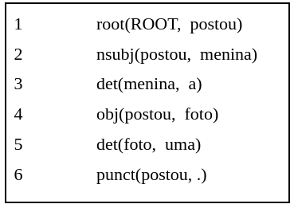
A representação na Figura 6.15 também mostra a hierarquia entre as duas palavras e a direcionalidade da relação, por meio da ordem das palavras dentro dos parênteses.
A raiz, assim como acontece na representação por diagrama arbóreo, também é representada em uma das linhas, como se fosse “dependente” de um núcleo fictício, chamado ROOT, representado por letras maiúsculas, em uma relação chamada root representada por letras minúsculas. O elemento ROOT representa o elemento vazio.
A vantagem da representação parentética é que ela é mais fácil de ser implementada, já que está no formato de texto e não depende de softwares de anotação. Por outro lado, a desvantagem é que a visualização da estrutura sintática da sentença, por um humano, é mais difícil do que uma representação por árvore. Na Figura 6.16 temos a representação parentética da sentença “A menina postou uma foto no Instagram com filtro”, na qual há cruzamento de arcos. O cruzamento das relações, claramente visível na Figura 6.14, é mais difícil de ser identificado na representação parentética.
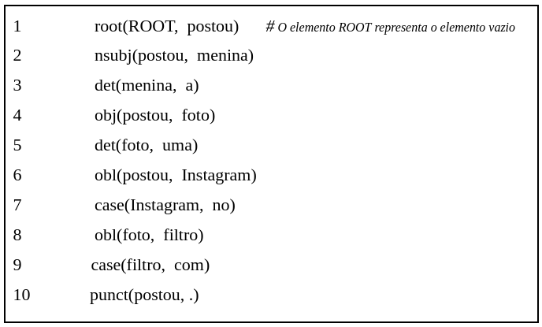
Destacamos, também, que, na representação parentética, a ordem das linhas não precisa seguir a ordem das palavras, podendo-se começar na primeira linha com a relação de root ou de punct ou qualquer outra macro ou microrrelação, ou colocar qualquer uma delas na sequência. O importante é que todas as relações macro e micro estejam explícitas. Nesse sentido, verificar se a anotação de todas as relações está completa é mais difícil de ser feito na representação parentética, ao passo que, na representação por diagrama arbóreo, é mais fácil visualizar caso haja palavras nas quais não esteja chegando nenhuma seta.
A sintaxe de dependência foi ganhando espaço no PLN nas últimas duas décadas e é hoje o tipo de parsing sintático mais utilizado, sobretudo em tarefas de extração de informação (Capítulo Extração de Informação). A seguir apresentamos um dos projetos de anotação multilíngue de sintaxe de dependência com reconhecido impacto nacional e internacional. Trata-se do projeto Universal Dependencies, cuja proposta visa maior consistência na anotação de corpora nas distintas línguas com base num arcabouço comum que possibilite a comparabilidade entre línguas. Apresentamos, também, um breve histórico de iniciativas de anotação que antecederam a proposta das Universal Dependencies.
6.6.3 Projetos de anotação multilingue: Universal Dependencies
Na primeira década de 2000, surgiram várias iniciativas para tentar representar as relações sintáticas entre as palavras de uma frase por meio de dependências. Uma delas é a chamada Stanford Dependencies (SD), que passou a fazer parte de um dos parsers mais utilizados, o parser Stanford, primeiramente para o inglês e posteriormente, para várias outras línguas7. Como essa iniciativa despertou interesse na comunidade linguística e de PLN, em 2006 e 2007 foram propostas shared tasks no CoNLL-X, nas quais os participantes treinaram e testaram sistemas nos mesmos conjuntos de dados usando anotação de dependências. Em 2007 especificamente, os participantes usaram uma abordagem multilíngue, baseada em treebanks de 10 línguas, e adaptada a um domínio. Nivre et al. (2007) descrevem essa tarefa, as diferentes abordagens usadas pelos participantes e os resultados dos experimentos.
Seguindo essa ideia de universalizar as representações de dependência para várias línguas, Google também criou seu próprio conjunto de etiquetas, baseando-se na análise de erros que foi feita para aquela shared task do CoNLL-X.
Outra iniciativa relevante foi o Interset interlíngua (Zeman, 2008), que criou uma ferramenta para a conversão de etiquetas morfossintáticas entre línguas. Essa abordagem parte do princípio de que algumas línguas são semelhantes entre si, mas nem todas elas possuem recursos suficientes para PLN. A iniciativa propõe converter a anotação morfossintática de uma língua com mais recursos para outra língua que possua menos recursos (Zeman; Resnik, 2008).
Todas essas iniciativas contribuíram para o que foi posteriormente chamado de projeto Universal Dependency Treebank (UDT) (McDonald et al., 2013), cuja ideia principal é universalizar as anotações das relações sintáticas e os conjuntos de etiquetas, a fim de propiciar a comparabilidade entre as línguas. Em 2013, foi lançada uma primeira versão envolvendo 6 línguas e depois, em 2014, outra versão envolvendo 11 línguas. A língua portuguesa, com corpora de português europeu e brasileiro, está representada nos treebanks com anotação em UD disponíveis (Rademaker et al., 2017). Atualmente, os treebanks anotados de acordo com o padrão UD abrangem mais de 100 línguas de várias famílias e troncos linguísticos diferentes.
Assim, o projeto das Dependências Universais (em inglês, Universal Dependencies), mais conhecido como as UD, é o resultado da combinação de todas essas iniciativas em uma abordagem única e articulada, baseada nas dependências universais de Stanford, uma versão ampliada do conjunto de etiquetas universais propostas pelo Google, um subconjunto revisado do conjunto de features do Interset, e uma versão revisada do formato CoNLL-X (chamado CoNLL-U)8. O projeto é a iniciativa mais usada e difundida hoje, motivo que justifica sua descrição em detalhes neste capítulo.
UD é um projeto que visa à anotação sintática sistemática e consistente em diversas línguas, de forma que essas línguas possam ser comparadas em relação à estrutura de suas sentenças. Apesar de buscar a maior padronização possível das anotações para garantir a comparabilidade entre as línguas, essa representação também prevê anotações particulares para línguas específicas, quando necessário. Justamente pelo fato de que algumas línguas possuem especificidades que não podem ser generalizadas para outras, o projeto UD precisa garantir que, apesar disso, as anotações sejam consistentes para que as línguas possam ser comparadas. Portanto, o projeto deve seguir seis premissas básicas9 que reproduzimos, em nossa tradução, a seguir:
- A proposta das UD precisa possibilitar uma análise linguística satisfatória para todas as línguas.
- A proposta das UD precisa ser apropriada para a tipologia linguística, ou seja, fornecer uma base adequada para evidenciar o paralelismo linguístico entre línguas e famílias linguísticas.
- A proposta das UD precisa ser adequada para uma anotação rápida e consistente pelo anotador humano.
- A proposta das UD precisa ser compreendida e utilizada com facilidade por uma pessoa sem formação como linguista, seja um aprendiz de línguas ou um engenheiro com demandas básicas de processamento de língua.
- A proposta das UD precisa ser adequada para o parsing de alto desempenho.
- A proposta das UD precisa apoiar bem as tarefas de Compreensão de Linguagem Natural (Capítulo O que é PLN?) subsequentes ao parsing sintático (extração de relações, compreensão de textos, tradução automática, dentre outras).
Além da representação básica por dependência já explicitada ao longo da Seção Sintaxe de dependência, que é obrigatória para todos os treebanks, a UD também prevê um segundo nível de representação de dependência chamada de enhanced, no sentido de obter uma representação mais completa e mais enriquecida. Esse segundo nível é uma camada extra de anotação das relações, realizada a fim de dar uma base mais completa para a interpretação semântica. Essa representação enhanced não é uma árvore tal como a árvore de dependências básicas, mas uma estrutura que agrega informação à árvore básica, conforme se apresenta para o Exemplo 6.9 na Figura 6.17.
Exemplo 6.9
As colegas convenceram a menina a postar a foto com o celular.
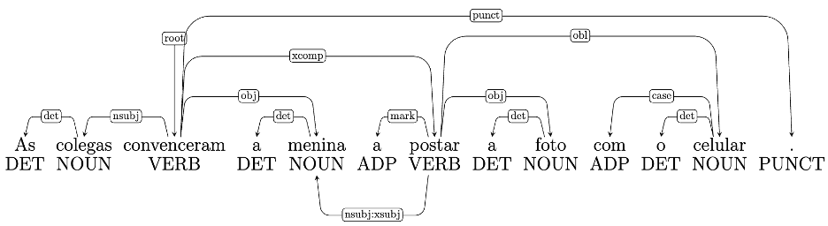
A Figura 6.17 mostra, na parte de cima da sentença, as relações de dependência básicas, e na parte de baixo, as relações enhanced. No Exemplo 6.9, temos dois verbos, cada um dos quais tem seu sujeito. Nas relações básicas, indicamos, por meio da relação nsubj, o sujeito (“as colegas”) do verbo principal (“convenceram”). Nas relações enhanced, podemos indicar, por meio da relação nsubj:xsubj, o sujeito (“a menina”) do segundo verbo (“postar”). Ambos os sujeitos são relevantes para a interpretação de papéis temáticos e, consequentemente, para tarefas em PLN como a extração de informação.
6.7 Qual é melhor: constituência ou dependência?
Uma vez apresentados os dois tipos de análise sintática mais utilizados em PLN, cabe perguntarmos quais as vantagens e desvantagens de se adotar cada um deles. A Figura 6.19 apresenta uma síntese dos principais pontos de cada tipo de análise sob a perspectiva de seu potencial em projetos de PLN.
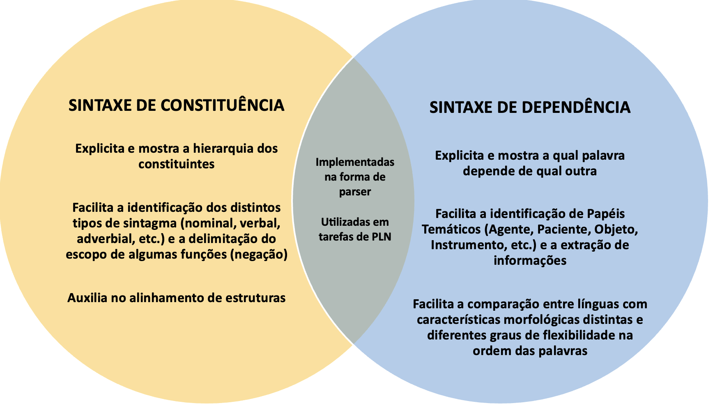
6.8 Fronteiras da sintaxe
Conforme apontado na Seção Introdução deste capítulo, a sintaxe é um dos estratos centrais no sistema linguístico (Figura 6.1). Por estar no centro do sistema, seu estudo possui interseção com vários outros níveis, como a morfologia, a semântica, a pragmática e o discurso. Isso porque a separação em níveis ou estratos é uma forma didática de apresentar o objeto de estudo de cada área; porém, na língua em uso, esses níveis são interdependentes uns dos outros. Portanto, definir os limites entre um nível e outro é uma tarefa complexa. A seguir, exploraremos alguns conceitos e problemas linguísticos que estão na fronteira entre a sintaxe e um outro nível de análise linguística.
6.8.1 Sintaxe e Morfologia
Os traços morfológicos são gramaticalizados de diferentes formas em distintas línguas. Assim, qualquer noção que possa ser expressa morfologicamente em uma língua (por meio de traços morfológicos) pode ser expressa lexicalmente em outras línguas (por meio de perífrases ou paráfrases) (Bender, 2013).
Em português, convencionou-se que os afixos (prefixos, sufixos e infixos), as desinências (nominais e verbais) e outros componentes de palavras são unidades estudadas pela morfologia, enquanto a relação entre as palavras é estudada pela sintaxe.
Mesmo tendo-se estabelecido essa convenção, há aspectos linguísticos que estão na fronteira entre a morfologia e a sintaxe. Por exemplo:
A língua portuguesa constrói gênero gramatical (feminino ou masculino) nos substantivos por meio de uma desinência, por exemplo: “médico” e “médica”. Há, porém, substantivos chamados “epicenos”, que designam, com uma mesma forma, os dois gêneros (masculino e feminino), sendo feita a distinção de um gênero ou outro por meio da adição das palavras “macho” e “fêmea”, como, por exemplo: “cobra macho” e “cobra fêmea”. O gênero dos substantivos em português é, portanto, estudado tanto pela morfologia (quando se utiliza uma desinência) quanto pela sintaxe (quando é necessário usar um sintagma contendo duas palavras).
Há também casos em que a mesma palavra (a mesma grafia) pode ser classificada como adjetivo ou particípio passado de um verbo (e.g. “solto”, “feito”, “motivada”). Isso depende da estrutura na qual a palavra opera. Assim, a distinção entre essas duas classes de palavras é de ordem sintática; contudo, tem impacto na morfologia, uma vez que, dependendo da classe de palavra atribuída, a palavra pode receber features de adjetivos ou features de verbos. Se em um texto clínico, encontramos a frase “Paciente lúcido e orientado”, interpretamos “lúcido” e “orientado” como adjetivos que qualificam o substantivo “paciente” e constroem significados do estado de saúde do mesmo. Nesse caso, “orientado” é classificado como adjetivo e recebe as features de gênero e número. Já em “Paciente orientado a procurar fisioterapia”, “orientado” é classificado como particípio passado do verbo “orientar”, em uma oração passiva sem explicitação do auxiliar “ser” e sem realização de uma função que indica o Papel Temático de Agente da ação, o qual no contexto pode ser interpretado como o profissional da saúde que realizou o atendimento. Neste caso, “orientado” recebe features da classe verbo e também da classe adjetivo, uma vez que em português os particípios passados concordam em gênero e número com os substantivos que realizam o sujeito da oração: “O paciente foi orientado”, “A paciente foi orientada”.
O tempo futuro do presente, em português, pode ser construído por meio de uma desinência (por ex. “á” para a terceira pessoa do singular: “soltará”, “fará”, “motivará”) e anotado com a feature morfológica de futuro. Também pode ser construído por uma perífrase verbal (e.g. “vai soltar”, “vai fazer”, “vai motivar”). Neste segundo caso, nenhum dos verbos recebe a feature morfológica de futuro, já que o significado de futuro se dá pela combinação dos dois verbos, e não por uma desinência. As formas construídas por meio de desinência são chamadas de futuro sintético e constroem a noção de futuro com recursos da morfologia. Já as formas construídas por meio de perífrase são denominadas futuro analítico e constroem a noção de futuro com recursos da sintaxe.
Formas negativas de adjetivos podem ser criadas em português por meio de morfemas (e.g. “capaz” x “incapaz” ou “normal” x “anormal” ou “moral” x “imoral”) ou lexicalmente (i.e “governamental” x “não governamental”). O processo de formação de palavras por meio da adição de prefixos de negação a-, i-, im-, in- é estudado dentro da morfologia, ao passo que a construção da negação a partir da inserção de uma outra palavra é estudada no escopo da sintaxe.
As formas verbais que indicam imperativo em português possuem a mesma morfologia de subjuntivo. A definição entre um modo verbal e outro depende do contexto sintático em que estão inseridas. Por exemplo na sentença “Faça isso imediatamente”, o verbo “faça” é classificado como modo imperativo. Já na sentença “Quero que você faça isso imediatamente”, o verbo “faça” é classificado como subjuntivo. Para definir a feature morfológica de modo verbal a ser atribuída a formas como “faça” é preciso antes fazer a análise sintática da sentença.
6.8.2 Sintaxe e Semântica
A análise sintática pode ser complementada pela análise no nível da semântica. Essa complementação pode ser ilustrada com o seguinte exemplo.
Dada uma oração como “João deu um pulo”, uma análise sintática de constituência nos permite identificar dois constituintes maiores: “João”e “deu um pulo”, este último passível de ser segmentado em constituintes menores contidos nele: “deu” e “um pulo”. Numa análise de sintaxe de dependência, observamos as relações entre as palavras e identificamos “deu” como sendo a palavra raiz (root), “João” seu dependente em relação de sujeito (nsubj) e “pulo” em relação de objeto (obj). Assim, interpretamos que alguém (“João”) realiza uma ação (“dar”) que tem um objeto (“um pulo”). No entanto, todos nós interpretamos “dar um pulo” como expressão de uma ação equivalente a “pular”. Como vimos neste capítulo, os constituintes que exercem a função de objeto geralmente correspondem a um papel temático na semântica. Em uma oração como “João deu um dinheiro”, “dinheiro” é objeto do verbo “dar” e cumpre o papel temático de objeto estativo. Já em “João deu um pulo”, o objeto “pulo” não possui status de papel temático; portanto, consideramos “deu um pulo” como uma única unidade do ponto de vista semântico. Assim, a análise sintática de dependência apresenta a mesma configuração para orações como “João deu um pulo” e “João deu um dinheiro”. Em PLN, casos como este demandam uma análise semântica complementar à análise sintática, pois a identificação de papéis temáticos é relevante em tarefas como a extração de informação.
6.8.3 Sintaxe e Pragmática
A análise sintática pode, também, ser complementada pela análise sob a perspectiva da pragmática. Os exemplos a seguir ilustram essa complementação.
Em português, temos configurações de sentenças com uma palavra indicando negação, as quais constroem, no entanto, significados positivos. Numa sentença exclamativa como “Quantas vezes ela não ligou chorando!”, temos o advérbio “não”, que constrói um significado negativo. Contudo, interpretamos a exclamação como construindo um significado afirmativo: “ela ligou chorando muitas vezes”. Em casos como este, de sentenças com elementos negativos que constroem um significado afirmativo, vemos que a perspectiva pragmática, isto é, a análise da linguagem em uso e dos pressupostos e inferências que fazemos como falantes, é relevante para complementar a análise sintática. Do contrário, interpretaremos a exclamação como a negação do evento: “ela não ligou chorando”.
A perspectiva da pragmática também nos ajuda a interpretar sentenças nas quais não há elemento de negação, mas o significado construído é negativo. Por exemplo, em “Pessoa alguma será condenada”, não temos nenhuma palavra que construa o significado de negação. No entanto, a oração é interpretada como “Nenhuma pessoa será condenada”. Cabe destacar que, se trocarmos a ordem das palavras neste exemplo, teremos uma interpretação distinta, como é evidente ao contrastarmos “Pessoa alguma será condenada” e “Alguma pessoa será condenada”.
6.8.4 Sintaxe e Discurso
O nível do Discurso e os Modelos Discursivos (Capítulo Modelos discursivos) serão apresentados mais à frente neste livro, mas convém explicitar neste momento uma confusão que se faz comumente entre os níveis sintático e discursivo.
A Gramática Tradicional (GT), nas seções referentes à sintaxe, estuda os conceitos de frase, oração e período, assim como a classificação das orações dentro de um período, por exemplo em oração principal, oração coordenada adversativa ou oração subordinada adverbial consecutiva, dentre várias outras.
Essas mesmas relações são estudadas em PLN no nível do Discurso como relações de contraste, de explicação, de equivalência, dentre várias outras. Isso porque as teorias discursivas, tais como RST (Rethorical Structure Theory) e CST (Cross-document Structure Theory) não limitam sua unidade de análise linguística apenas dentro do texto, da sentença, do período ou da frase. São teorias que estudam o discurso independente do tamanho ou dos limites marcados por sinais de pontuação.
Apesar do rol de relações das teorias discursivas não representar uma equivalência exata com os tipos de orações da Gramática Tradicional, podemos identificar paralelos, por exemplo, entre uma relação de Summary (da RST) e uma oração coordenada conclusiva (da GT) ou entre uma relação discursiva de Indirect Speech (da CST) com uma oração subordinada substantiva objetiva direta).
6.9 Considerações finais
Neste capítulo, introduzimos os conceitos básicos de sintaxe, que é a área da linguística responsável por definir e descrever a ordem e a função das palavras e sintagmas na frase. Assim, foram discutidos conceitos linguísticos de classe de palavra, constituinte, sintagma, frase, oração, período (ou sentença), escala de ordens, função sintática, papel temático, assim como conceitos sintáticos voltados para o PLN, tais como part-of-speech (PoS), parser, parsing, treebanks, árvore de dependência, núcleo (head, governor, parent), dependente (child, dependent), entre outros.
Como o escopo deste livro é o processamento de língua natural, explicitamos as duas principais abordagens sintáticas usadas em PLN, que são: a sintaxe de constituintes e a sintaxe de dependência. Mas é importante ressaltar que existem várias correntes linguísticas teóricas que estudam e descrevem a sintaxe a partir de diferentes pontos de vista. Algumas dessas correntes são: paradigma formal ou estrutural, paradigma funcional ou funcionalista, o sistêmico-funcional, o gerativo ou gerativista, dentre outros.
Tanto a sintaxe de constituintes quanto a de dependência são abordagens amplamente usadas em PLN e, para isso, precisam de uma representação formal. Foram apresentados os tipos mais comuns de representação dessas duas abordagens, a saber: por meio de colchetes, de árvores, de setas, de parênteses e de indentação.
Ao final do capítulo, apresentamos alguns exemplos de questões e problemas linguísticos que podem ser estudados pelo viés da sintaxe ou de algum outro nível linguístico, já que essas fronteiras não são tão bem definidas na língua em uso. Como o foco do livro está na língua portuguesa, nos limitamos a mencionar brevemente alguns poucos exemplos. Para um estudo mais aprofundado sobre as fronteiras entre a sintaxe e os demais níveis linguísticos, ver Bender (2013).
O próximo capítulo (Capítulo Ferramentas e recursos para o processamento sintático) também é dedicado ao estudo da sintaxe dentro do PLN, porém com um olhar mais computacional voltado para os recursos e ferramentas disponíveis para fazer análise sintática automaticamente, os tipos de parsing e as abordagens sintáticas mais comuns em PLN.
Cabe aqui um esclarecimento sobre a nomenclatura. Em língua inglesa, utilizamos “phrase” para nomear o nível da escala de ordens acima da palavra e abaixo da oração, enquanto “syntagma” nomeia a organização das funções numa unidade. Assim, toda “phrase” possui uma organização de funções ou “syntagma”. Na língua portuguesa, a palavra “sintagma” é utilizada para se referir ao que em inglês é denominado de “phrase” e de “syntagma”.↩︎
Em estudos de sintaxe em português, “sentença” nomeia a maior unidade de análise sintática, a qual também pode ser nomeada como “frase” ou “período” (Kenedy; Othero, 2018).↩︎
As árvores de constituência utilizadas neste capítulo foram elaboradas com o software jssyntaxfree, disponível em https://github.com/int2str/jssyntaxtree, com base em anotação das autoras. O conjunto de etiquetas utilizado é o adotado pelo projeto PortulanClarin, disponível em https://portulanclarin.net/.↩︎
Imagens geradas com o aplicação https://gencraft.com/ e modificadas pelas autoras.↩︎
Entendemos que todos esses termos são sinônimos, mas adotaremos neste capítulo o termo “núcleo”.↩︎
Vale ressaltar que estes termos também são usados em inglês: “parent”, “child”, “grandparent”, “grandchild” e “sibling”.↩︎
O parser Stanford também dispõe de um conversor que transforma uma árvore de constituência em uma árvore de dependência, o qual funciona para várias línguas, incluindo o português. Mais informações sobre SD e Stanford parser podem ser consultadas em https://nlp.stanford.edu/software/lex-parser.shtml.↩︎
Tradução nossa do original: “The new Universal Dependencies is the result of merging all these initiatives into a single coherent framework, based on universal Stanford dependencies, an extended version of the Google universal tagset, a revised subset of the Intersect feature inventory, and a revised version of the CoNLL-X format (called CoNLL-U)”.↩︎
As premissas podem ser consultadas em https://universaldependencies.org/introduction.html.↩︎
Referência: https://universaldependencies.org/u/dep/all.html.↩︎